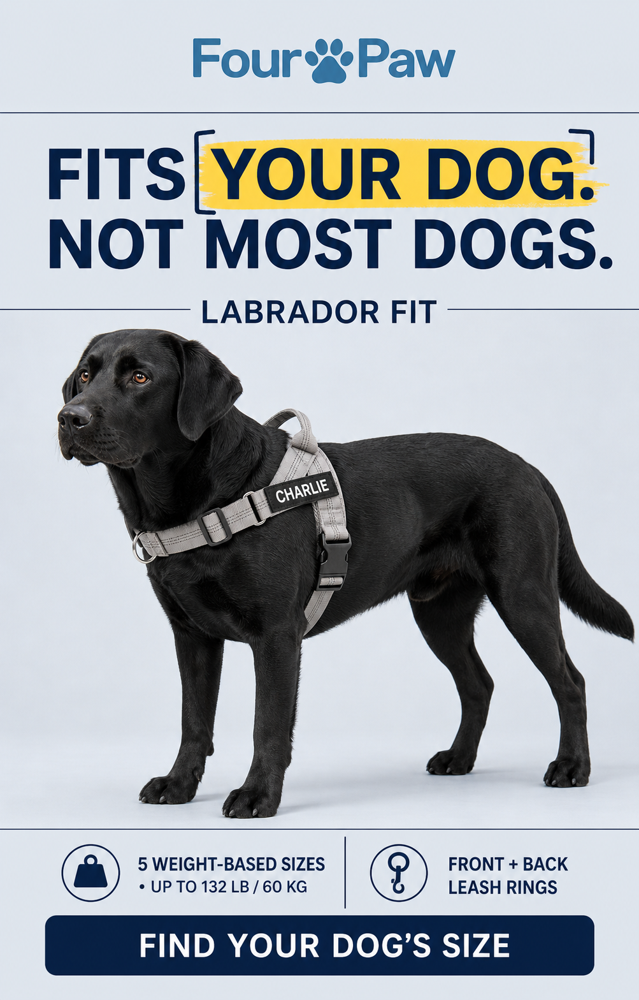
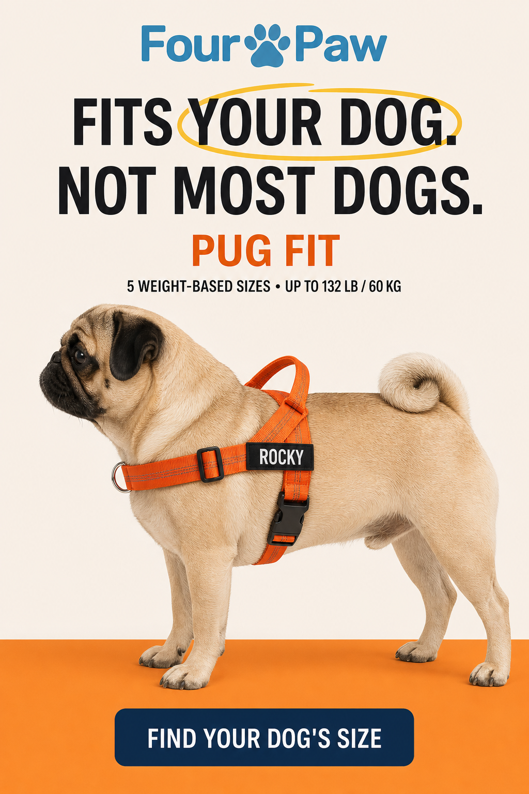
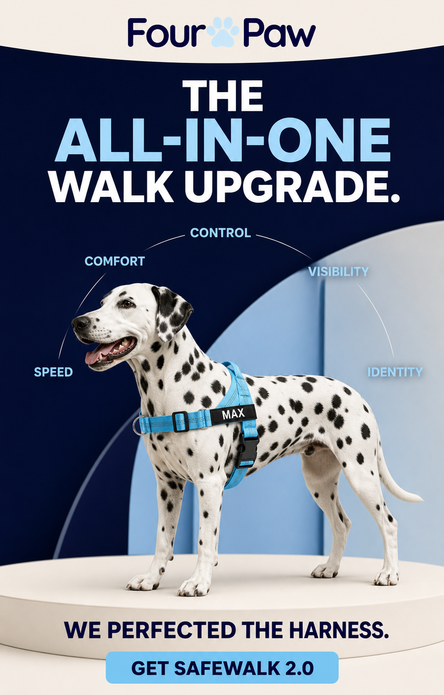
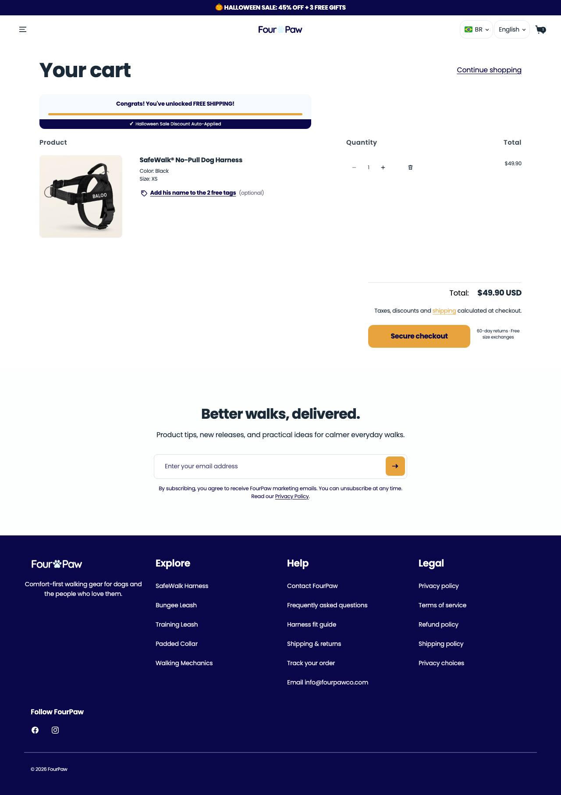

Loja de 6 produtos e um herói, o SafeWalk® No-Pull a US$ 49,90. É o molde mais próximo do que um iniciante consegue montar: um peitoral, uma guia elástica, um kit, 'tamanho errado? trocamos de graça'.
fourpawco.comativa desde 23/07/2026 (~3 meses)Plataforma: Shopify · tema 'FourPaw CRO Dev' · Klaviyo, Loox, GTM, Kaching Bundles, Clarity
não calculado: a amostra de 12 anúncios foi criada quase toda em duas levas (11/09 e 25/09), então qualquer cadência por dia seria rajada extrapolada
Únicos na amostra
textos/títulos únicos: 2 em 12 anúncios do nicho
Duplicação
6x na amostra (12 anúncios para 2 textos únicos)
Mix de formato
8 imagens, 4 DCO (amostra do nicho)
Nível de sofisticação
nível 1: imagem de produto com oferta de 45% off, 3 brindes e frete grátis
Nota de contagem
FourPaw (1280618591794238): 124 ativos, 239 no histórico [API 0/99 · Biblioteca pública 124/239]; Dog Owner Magazine (1299437793258245): 1 ativos, 1 no histórico [API 0/0 · Biblioteca pública não rodada para esta página · piso: 1 anúncios ativos vistos na mineração]. Regra: maior valor por página entre a API oficial e a Biblioteca pública; a loja soma as páginas.
Google Ads
anuncia no Google: 5 anúncios
Momentum da operação
em teste. 124 anúncios ativos (240 no histórico), 2 textos únicos na amostra de 12 anúncios e o mais antigo com 49 dias; tráfego pequeno (abaixo de 20 mil visitas por mês, faixa "<20K" do SimilarWeb 10/2026, teto) e visita longa (7min43, 4,66 páginas), o que sugere público qualificado, não volume. Série mensal: não obtida. inferido
BenchmarkBenchmark de custo da categoria: CPM US$ 14,19 (média geral Meta 2025; até US$ 24,50 em Vendas) · CPC US$ 0,61 a 0,96 (pet care, proxy fraco) · CPA US$ 38,19 (média geral; pet care US$ 15,29, proxy fraco). Fonte: Triple Whale 2025 e pesquisa web de 29/10/2026.
03Ranking de criativos vencedores
Criativo campeão: 49 dias no ar (o mais antigo da amostra desta loja).

ESTÁTICO
FourPaw
SafeWalk® No-Pull Dog Harness, Front-Clip Design | FourPaw
no ar há 49 dias · desde 11/09/2026
ativo

ESTÁTICO
FourPaw
SafeWalk® No-Pull Dog Harness, Front-Clip Design | FourPaw
no ar há 49 dias · desde 11/09/2026
ativo

ESTÁTICO
Dog Owner Magazine
SALE: 45% OFF + FREE GIFTS
Your dog is not “bad.” The collar is doing damage. Every time a pulling dog hits the end of the leash, the force goes straight into the neck and throa
não obtidoa Meta não publica gasto para e-commerce fora dos recortes regulatórios
O que isso prova
Que este anúncio está no ar há 49 dias e a página segue investindo no ângulo.
O que isso não prova
Escala, gasto, faturamento ou lucro.
Prova do anúncio
Dog Owner Magazine
Your dog is not “bad.” The collar is doing damage. Every time a pulling dog hits the end of the leash, the force goes straight into the neck and throat. That pressure creates choking, discomfort, and walks where your dog drags you instead of walking with you. SafeWalk changes the connection point. The front D-ring redirects the pull toward the chest, not the neck, and stops pulling during the walk. You get real control without constantly yanking back on the leash. And it takes only 3 seconds to put on or take off. ✓ Easy-adjust straps for a secure fit ✓ Reflective straps for better visibility ✓
não obtidoa Meta não publica gasto para e-commerce fora dos recortes regulatórios
O que isso prova
Que este anúncio está no ar há 35 dias e a página segue investindo no ângulo.
O que isso não prova
Escala, gasto, faturamento ou lucro.
Ordem por dias no ar (o mais antigo ainda ativo é o vencedor mais provável): 49 dias ↗ · 49 dias ↗ · 35 dias ↗. Longevidade do campeão: 49 dias.
04Tráfego
abaixo de 20 mil
visitas mensais
SimilarWeb 10/2026
observado · SimilarWeb 10/2026
4.794.770
rank global
rank no país:
observado
45,8%
bounce
páginas por visita · duração
observado
países de origem
Tranco sem ranking
observado
TráfegoSérie mensal de 3 meses: não obtidoo gráfico do SimilarWeb não expõe os valores em texto. Split entre tráfego pago e orgânico: não obtidoSimilarWeb gratuito não separa.
05Faturamento e investimento
até US$ 25.000
Faturamento mensal estimado: só o teto
o tráfego é a faixa "<20K" (teto); central e piso não estimados
inferido
não obtido
central e piso da faixa
o SimilarWeb só devolveu a faixa abaixo de 20 mil
observado
não obtido
investimento em mídia/mês
a Meta não publica gasto de e-commerce fora da UE
observado
Confiança do faturamento
estimado incerto, só teto: até 20 mil visitas (faixa "<20K") x conversão x ticket de US$ 50; o real pode ser bem menor
Reviews
contagem não exposta (Loox)
NotaNão mostro ROAS: seria uma conta circular (gasto estimado a partir do mesmo dado).
06Páginas capturadas: home, PDP e carrinho
HOME
PDP · SafeWalk® No-Pull Dog Harness
CARRINHO

07Anatomia do vencedor
Camada
O que é
Big idea
Seu cão não é 'mau'. A coleira é que está machucando.
Mecanismo
a força do puxão vai para o pescoço e a garganta na coleira; no peitoral de argola frontal ela vai para o peito.
Gancho
'SALE: 45% OFF + FREE GIFTS', 'Your dog is not “bad.” The collar is doing damage.'
Estrutura
imagem de produto + oferta (45% off + 3 brindes + frete grátis)
Objeção atacada
culpa do dono ('meu cão é bagunceiro') e tamanho (troca grátis)
O que copiar e o que evitar
CopiarA troca de tamanho grátis escrita na PDP, o tamanho pelo peso do cão (mais fácil que fita métrica) e o kit de passeio como degrau.
Não copiarPreço de US$ 49,90 no herói sem prova social visível: para loja nova, US$ 39,90 é o preço do mercado.
08Oferta, stack e canais
Frete
grátis; entrega em 5 a 10 dias úteis ("high volume of orders")
Garantia
60 dias, troca grátis ou dinheiro de volta ("Wrong size? We'll exchange it free")
Prazo de envio
5 a 10 dias úteis, informado na PDP
BNPL/parcelamento
não identificado
Guia de tamanho
tamanho por peso ('Five sizes cover dogs up to 132 lb'), peito só se ficar entre dois tamanhos